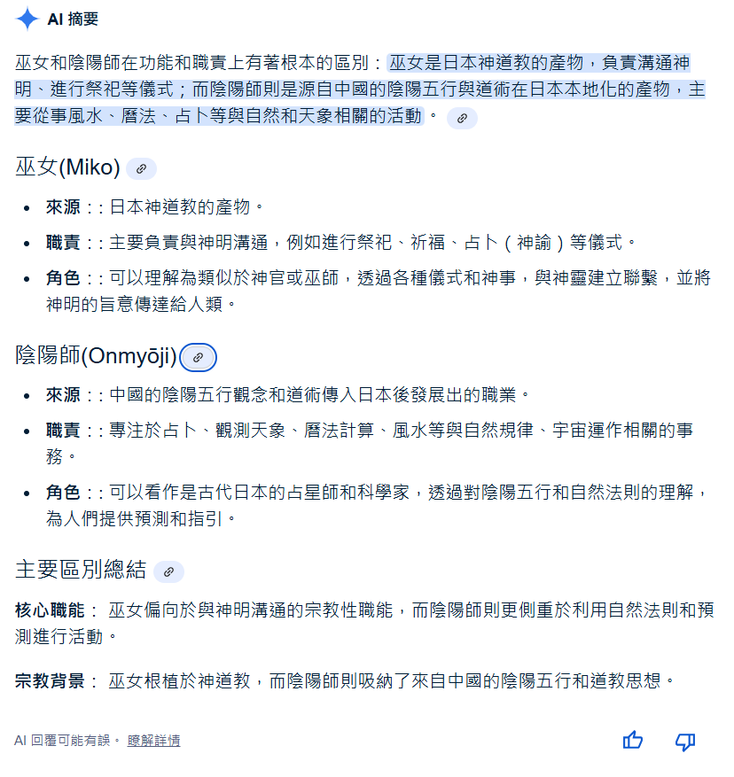
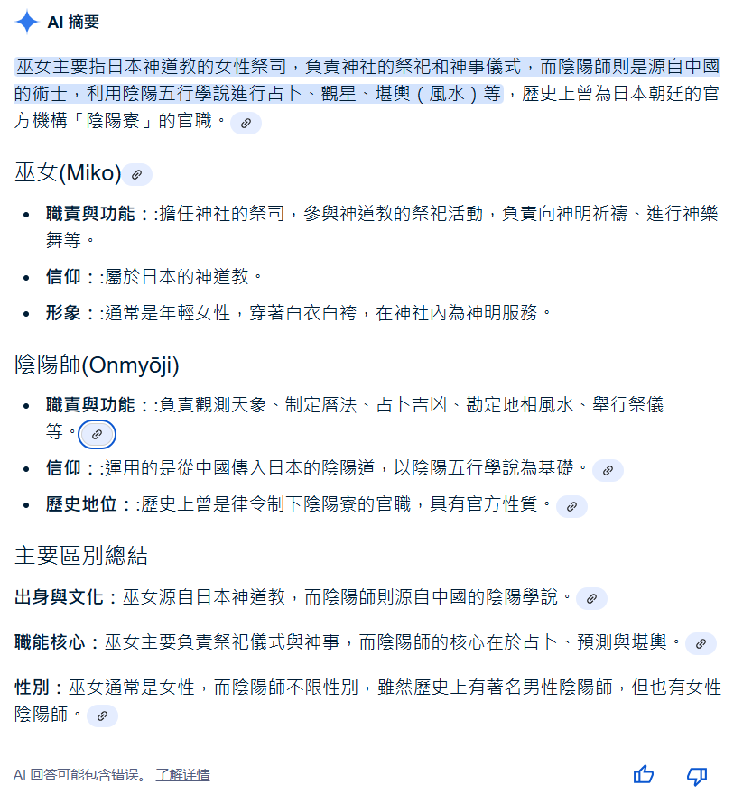

神道與陰陽道：當信仰遇上科學
日本文化中常見的神職角色如巫女、陰陽師等，實際上並非來自相同宗教體系。本文將從歷史與文化角度，分析神道與陰陽道的本質差異、常見誤解，並探討兩種宗教如何影響流行文化作品如《鬼太郎》、《犬夜叉》、《鬼神童子》、《靈異教師神眉》、《妖怪少爺》、《結界師》、《超人力霸王系列》，以及這些信仰與科學觀念的衝突。
神道的基本信仰與邏輯問題
- 神道主張「萬物有靈」，相信自然萬象中都存在神明或靈體，這導致一個潛在的邏輯問題：若任何東西都能變成神或精，那麼神與非神的界線何在？
- 神道不強調道德教義，也沒有明確的教典或教主，這在現代社會中容易被誤解為「文化習俗」而非「宗教信仰」。
- 神道強調「穢」與「潔」，但並未明確說明何謂絕對的善惡，只在意是否「污染神域」，這也讓其信仰邏輯與倫理判準模糊。
陰陽道的矛盾與迷信性
- 陰陽道源自中國陰陽五行思想，與道教、佛教元素融合，在日本演變成以占卜、驅邪、祈福為主的體系。
- 陰陽師常被賦予「預言未來」「召喚式神」等能力，容易與魔法或妖術混淆，這些內容多為文學與動漫誇飾。
- 陰陽道試圖用五行理論解釋萬象，卻缺乏科學依據。舉例來說，五行相剋說無法實證，卻被應用在建築、命理甚至醫療上。
神道與陰陽道 vs 科學方法
儘管神道與陰陽道在日本文化中有深厚影響，但它們在世界觀與思考方式上，與科學存在根本差異。以下是簡要對照：
| 項目 |
神道／陰陽道 |
科學方法 |
| 基礎觀點 |
信仰靈體、神明、自然精靈等不可見存在 |
基於自然現象觀察、理性推論與實驗驗證 |
| 驗證方式 |
透過儀式、傳說、師承信念來認定真偽 |
依靠可重現實驗與統計數據檢驗假說 |
| 錯誤修正 |
神諭不可質疑，信仰不可更改 |
科學可隨證據推翻理論，持續修正 |
| 對未知的態度 |
以神祇、陰陽、風水解釋未知 |
承認未知存在，積極尋找自然規律 |
| 是否可重現 |
多數儀式、祈福效果無法驗證或重現 |
科學強調「可重複」「可預測」 |
🧠 雖然神道與陰陽道是文化資產，但不能等同於科學。在教育與判斷現實問題時，應以科學方法為依據，將宗教信仰視為文化背景，而非真理來源。
以妖怪為主題的動漫作品中的文化背景差異
- 《鬼太郎》：作品中常出現家具、電器等「無生命物品」成妖，這源於神道「萬物有靈」的思想，也反映出物品只要存在夠久，就可能「成精」的觀念。
- 《犬夜叉》：妖怪多以動物變化為主，如犬妖、狐妖、蛇妖等，這較接近中國與陰陽道的影響，並強調妖怪之間的「血統」與「力量」等階層性。
- 《鬼神童子》：主角役小明被設定為役小角的後代，而役小角是歷史上著名的陰陽師，顯示該作品背景深受陰陽道影響，並融合了神道靈體觀念與陰陽法術元素。
- 《靈異教師神眉》：結合陰陽道的符咒、陰陽五行理論與神道的靈體信仰，呈現多種宗教元素交織，故事中陰陽師與靈體互動，強調驅邪與解咒。
- 《妖怪少爺》：故事圍繞妖怪少爺與人類少女的互動，結合神道「萬物有靈」的思想與陰陽道的驅魔法術，反映出日本妖怪文化中多元且混合的宗教背景。
- 《結界師》：圍繞陰陽師使用「結界」封印妖怪與邪靈，純粹展現陰陽道法術系統，強調理性法術與靈力操控，與神道的靈體崇拜形成鮮明對比。
⚠️ 注意：《鬼太郎》偏向神道背景，《犬夜叉》、《鬼神童子》、《靈異教師神眉》、《妖怪少爺》、《結界師》則多帶有陰陽道色彩。兩者的妖怪概念雖有交集，但文化根源與宗教信仰體系明顯不同。
超人力霸王系列中的妖怪與日本傳統信仰的交集
《超人力霸王系列》是日本科幻與特攝文化中的經典作品，不僅影響了數代觀眾，還將各種奇幻妖怪和怪獸形象深深植入了大眾心中。這些妖怪的形象往往融合了神道與陰陽道的元素，例如妖怪的靈魂觀念、超自然能力等，因此它們與神道及陰陽道的信仰有著密切的關聯。藉由呈現超人力霸王中的這些妖怪，可以更深入探討日本文化中神祇與妖怪的多樣性，以及如何將這些信仰和現代科學進行對比與融合。
以下清單收錄《超人力霸王》系列中具「妖怪性質」的敵人角色，包含源自日本民間信仰、陰陽道、地方神話與自然精靈的形象，亦納入部分具有妖怪文化意涵的神獸型怪獸（如壬龍、夏之守望）等。
- 恩馬戈：於《超人力霸王太郎》第十四集登場，在古代被地藏王菩薩封印在地下的怪獸，但由於現代工事挖掘的破壞導致地藏菩薩像被取下、封印被破而復活。雖然地藏菩薩的信仰本身屬於佛教，但在某些陰陽道的儀式與信仰中，地藏菩薩也會被尊崇並參與其中，這使得地藏王的形象在陰陽道中也有其地位。但這並不意味著地藏菩薩是陰陽道的神祇，更多是說其功能和陰陽道的信仰領域有重疊。
- 莫奇隆：登場於《超人力霸王太郎》第三十九集，是來自月球的「臼怪獸（うす怪獣）」，造型宛如一座有生命的大型搗餅臼，手足短小、尾巴圓胖，能將身體縮起變形成巨大臼車（うすぐるま）高速移動。其誕生源於人類對月亮上「兔子搗餅」傳說的想像，象徵日本民間信仰與文化中對「餅」、「月亮」與「節慶」的聯想，是信仰具象化後的超自然存在。莫奇隆融合了日本「付喪神（つくもがみ）」的概念，這是指長年使用的器物獲得靈性而化為妖怪的信仰，反映了神道中「萬物有靈」的思想。作為擬人化的搗餅臼，莫奇隆不僅是怪獸，亦象徵著物品蘊含的生命力與文化精神。雖然行為帶有孩童般的執著，強烈渴望吃到地球上的餅，並因此從月球降臨地球造成騷動，但其破壞並非出於惡意，而是因為願望未被理解，類似民間故事中誤解妖怪的形象。莫奇隆視覺極為敏銳，能從5萬公里外察覺餅的存在，口中可噴出高熱火焰「モチロンボイラー」。其形象與行為深受日本年節儀式、餅文化及月神信仰影響，與神道的自然與民俗信仰有密切連結。
- 宿那鬼：於《超人力霸王迪卡》第十六集登場，融合了日本古代鬼怪與妖魔的形象。宿那鬼造型通常參考民間故事中的「夜叉」、「怨靈」或「惡鬼」傳說。在日本民間信仰中，宿那鬼被視為具有強大力量的妖怪，象徵邪惡與破壞，代表人類對自然與生命破壞所引發的報應，強調與自然和諧共處的重要性。其形象體現了人們對邪惡與破壞力量的恐懼與警惕，也深植於日本民間信仰與神話之中。
- 壬龍：於《超人力霸王蓋亞》第十一集初登場，古代被視為地脈守護神獸，居於地底深處。因人類破壞自然、開發地脈，導致其甦醒並切斷城市能源系統，象徵自然對科技與人類傲慢的反撲。雖有龐大破壞力，但最終展現出守護地球的意志，與蓋亞達成共識後回歸沉眠。壬龍融合了神話、自然信仰與怪獸力量的象徵性，屬於具神祇色彩的妖怪型怪獸。之後分別在第四十五集、第五十集，第五十一集登場。
- 山童：於《超人力霸王高斯》第九集登場，屬於日本民間信仰中的妖怪或精靈，與神道的自然神靈有較大的關聯。它的角色和形象受到日本山地文化的影響，因此並不直接屬於某一宗教體系，而是更多的與自然崇拜、山神信仰以及地方傳說結合在一起。據說只有純真的人看得到祂，所以見過世面的成年人是看不到祂的，除非他的純真之心被喚醒
- 怨靈鬼戀鬼：於《超人力霸王高斯》第十八集登場，名字中帶有「戀」與「怨靈」意象，代表對情感的執念與詛咒。設計靈感通常來自陰陽道對死者情念未解的解釋。
- 馬哈格諾姆：自古生活在日本的古代獸妖怪，又被稱為「馬哈格拉」，號稱是有著能將全國毀滅的強大力量。古時候被曾被山童封印，到了現代卻因為道路擴建，導致封印的祠堂被破壞，馬哈格諾姆也重見天日，與山童再度展開宿命的對決。造型由祖藏寶太郎設計，參考日本古代惡鬼以及獅子舞的面具形象創作
- 夏之守望：於《超人力霸王馬克思》第九集登場，奈津川村的【龍之祠】從古代封印至今的傳說之龍，由於封印用的龍之祠被破壞，以及20年前因湖泊污染公害事件而死亡的少女的思念，傳說之龍在現代覺醒並化身為巨龍，為了消滅傲慢的人類而展開破壞。最後在少女之靈的安慰下被麥克斯奧特曼淨化，回歸封印
在日本文化中，妖怪與怪獸有著明顯的區別，雖然兩者都屬於超自然的存在，但它們的起源、外形、行為特徵以及在故事中的角色有所不同。
首先，妖怪（yōkai）通常指的是一些具有神秘或超自然力量的生物，這些生物多來自民間傳說，擁有各種不同的形態與性格。妖怪的特點是常與人類世界有所交集，有時作祟害人，有時也能幫助人。它們不僅限於恐怖或危險的形象，性格與動機往往相當複雜，具有強烈的象徵意義。例如，河童（kappa）有時被描繪為調皮搗蛋的存在，但在某些故事中也可能成為守信用、甚至助人的角色。
另一方面，怪獸（kaiju）通常指那些體型龐大、具破壞性或恐怖外貌的生物。怪獸多出現在現代的科幻作品中，例如電影、漫畫或動畫。牠們常因核輻射、外星因素或科學實驗而產生，擁有毀滅性的力量，經常造成城市規模的破壞。最著名的例子是日本的哥吉拉（Godzilla），一隻由核污染催生的巨型怪獸，象徵著人類對科技濫用的恐懼與反思。
此外，妖怪與怪獸在文化屬性上的差異也十分顯著。妖怪屬於傳統信仰與靈異文化的範疇，帶有濃厚的神秘與魔幻色彩，對付它們的方式也多半依賴符咒、咒語、鹽等帶有宗教或民俗背景的手段；而怪獸則屬於現代科幻背景的產物，象徵科技異化與人類慾望的後果，面對怪獸時通常使用物理性的手段，如雷射光、粒子炮、機器人等高科技武器。因此，兩者所展現的世界觀與應對方式也截然不同。
簡而言之，妖怪是多樣化、情感豐富，且充滿象徵性的存在，主要出現在傳統故事與民間傳說中；而怪獸則代表巨大、強大、毀滅性的力量，多活躍於科幻與現代娛樂媒體。妖怪強調神秘與變化，怪獸則體現力量與破壞，兩者在日本文化中各自佔有重要地位。
陰陽師與巫女的不同信仰體系
- 巫女：屬於神道體系，主要職責為在神社中輔助祭祀、進行淨化儀式，是神職人員之一。她們與「神」溝通，不涉獵咒術或法術。
- 陰陽師：屬於陰陽道體系，與神道無直接關聯。陰陽師更像是占星師、風水師與法師的混合體，專精結界、占卜、召喚等技藝。
❗ 很多人以為巫女與陰陽師屬於同一神職編制，實際上他們來自兩種不同的宗教信仰：神道 vs 陰陽道。日本文化不是只有神道，也有陰陽道。


現實中的陰陽師與巫女 vs 動漫、電影、遊戲中的形象
- 現實中的陰陽師：主要是陰陽道的祭祀與占卜專家，負責風水、驅邪、結界、占星等儀式，實務多偏向宗教與傳統技藝，沒有超自然魔法力量。
- 動漫、電影、遊戲中的陰陽師：常被描繪成擁有強大法術、召喚式神、戰鬥技能的角色，誇大並浪漫化了陰陽道的神秘性，融合了奇幻與魔法元素。
- 現實中的巫女：神道教神社中的祭祀助理，負責淨化儀式、舞蹈與神事，角色較為傳統且宗教性強，並無超自然力量。
- 動漫、電影、遊戲中的巫女：常被塑造成具有預言、治癒或驅魔能力的角色，部分作品將她們描寫成靈媒或擁有特殊靈力，帶有奇幻色彩。
⚠️ 現實中的陰陽師與巫女多為宗教儀式的執行者，強調傳統與信仰，與動漫／遊戲中所呈現的超自然能力與戰鬥角色有明顯差異。
結語
神道與陰陽道在歷史上曾共存並相互影響，但其信仰基礎、儀式行為與哲學思想卻大異其趣。動漫作品往往將兩者混合使用，形成看似合理卻實則混淆的文化印象。
理解這些差異，有助於更清晰地解讀日本文化與宗教世界觀，並區分宗教傳統與科學知識的本質不同。